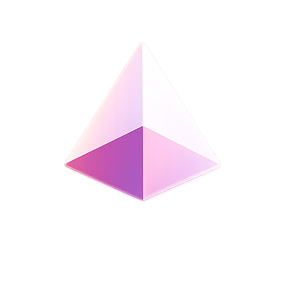
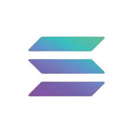

PRISM ProtocolProgrammable structured credit. Pool capital, slice risk into Prime, Core, and Alpha, then let markets price each layer in real time.
They rarely choose the exact risk layer they want to own.
Exit usually means redemption queues, maturity dates, or OTC negotiation.
Defaults are decided by documents, admins, and dashboards.
Capital already lives where PRISM settles.
USDC liquidity can fund credit vaults.
Users already understand token markets.
Lending works. Risk slicing is missing.
When credit risk becomes an SPL token, every wallet can hold it, every AMM can price it, and every protocol can build on it.
Tokenized treasuries became table-stakes in 2025. The next layer up is not collateral, not stables — it is tradeable credit.
IKA dWallets ship cross-chain custody. Encrypt ships FHE proofs. Both arrived inside the last 12 months — credit needed both to work on-chain.
EVM gas killed structured-credit primitives. Sub-cent Solana fees mean every yield event and loss cascade can settle on-chain.
We took the mechanics of a real-world credit fund, replaced the lawyers and Excel with two Solana programs, and turned the resulting risk layers into SPL tokens anyone can hold, trade, or build with.
Pick your risk: stable yield, balanced, or high-upside. Deposit USDC, get tranche tokens. Yield accrues into the token's NAV; you exit any time at the current price — either through the vault or the AMM.
Apply, attach cross-chain collateral via IKA dWallets, get USDC disbursed on Solana. Repay in USDC or fiat through Dodo. Default risk is absorbed by the Alpha tranche first.
Paid first in yield. Absorbs losses last.
Middle risk. Balanced yield and loss exposure.
First-loss capital. Highest yield, highest risk.
Choose Prime, Core, or Alpha. Deposit directly or via fiat checkout.
Apply, attach IKA dWallet collateral, repay in USDC or fiat.
Constant-product pools price pPRIME, pCORE, and pALPHA.
Run the full arc: deposit, yield, trade, default, withdraw.
Initialize vaults, approve loans, accrue yield, trigger events.
Dune SIM events, local DB fallback, explorer links, on-chain state.





pTRANCHE tokens can plug into the rest of DeFi.
Frequent NAV and AMM updates become affordable.
Risk can reprice as credit events happen.
IKA, Encrypt, and Cloak attestations verify natively.
| Protocol | Current scale | Core model | PRISM wedge |
|---|---|---|---|
| Maple | $2.15B TVL | Institutional lending pools | Not tranche-token secondary risk |
| Centrifuge | $1.63B TVL | RWA asset finance | Mostly non-Solana settlement |
| Clearpool TPOOL | $35.9M TVL | RWA / credit pools | Pool exposure, not waterfall AMMs |
| Goldfinch | $1.3M TVL | Borrower credit pools | No native Solana tranche market |
| Credix | $45K TVL · $10.7M borrowed | Solana RWA lending | Credit existed, liquidity did not |
| PRISM | Devnet protocol | Structured credit risk tokens | Prime/Core/Alpha + AMM repricing |
prism_core and prism_amm deployed on devnet.
Core, AMM, IKA lifecycle, default paths.
Deposits, withdrawals, loans, defaults, swaps.
IKA, Encrypt, Cloak, Dune SIM, Dodo.
Use the demo to validate programmable risk as a Solana primitive.
Partner with an originator to launch a sandboxed mainnet vault.
Harden contracts, publish SDK, onboard external LPs.